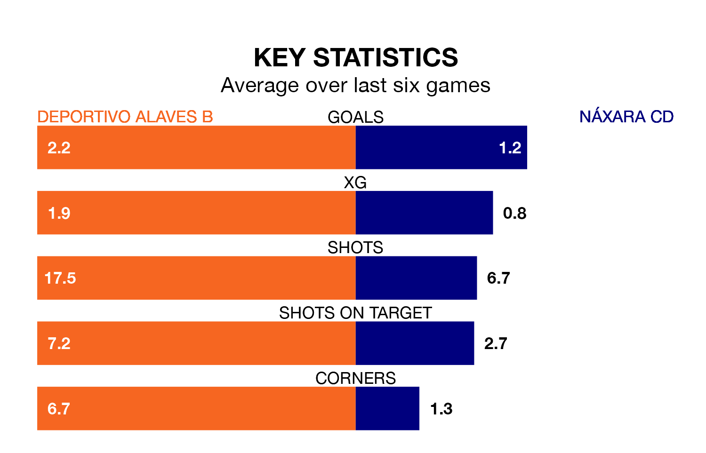

Mid-season relegation candidates Náxara CD face a challenge away against high-flying Deportivo Alaves B at Ciudad Deportiva José Luis Compañón on Sunday.
Náxara CD are rooted to the bottom of the Segunda División RFEF Group 2 table, and have picked up two wins and two draws in their 17 games to date.
Deportivo Alaves B, meanwhile, are fourth in the standings with 34 points, having won 11 and drawn one, and are 10 points behind table-toppers Athletic Club II.
With 30 goals in 17 games so far this season, Deportivo Alaves B are the league's third-highest scorers with 1.8 goals per game. And they are conceding fewer than average, letting in 17 goals at a rate of 1.0 per game.
Náxara CD, meanwhile, are below average scorers, with 0.6 goals per game, compared to a league average of 1.1. They have conceded 1.6 goals per game.
The home team are in fantastic form in Segunda División RFEF Group 2, with five wins and one loss from their last six games.
With two wins and four losses over that period, the visitors' form is much worse – they have taken six points from 18, compared to Deportivo Alaves B's 15.
Deportivo Alaves B's last match was on January 7, a 3-2 win against CD Tudelano.
Náxara CD lost 1-0 against CD Valle Egüés last time out, also on Sunday.
Updated: 10:50, 10/01/24